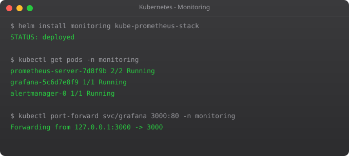

Kubernetes Tutorial — Part 11: Monitoring, Logging, and Observability

You can have a perfect cluster — great Deployments, proper Health Probes, Helm charts, ResourceQuotas — and still operate blind. Without monitoring and logging, when something breaks at 2am you are doing archaeology. You grep through logs manually, run kubectl describe on every pod, try to piece together what happened from incomplete information. It is stressful and slow.
I once spent four hours debugging a production incident that would have taken five minutes with proper monitoring. The application was responding slowly. Without metrics, I had no idea whether it was CPU, memory, database connections, or network. I guessed and restarted things until it accidentally got better. That was the last time I deployed to production without observability set up first.
Observability in Kubernetes has three pillars: metrics (numbers over time), logs (discrete events), and traces (request paths through distributed systems). In this part, we focus on metrics and logs — the two you need immediately for every cluster.
Viewing Logs with kubectl
Before setting up any tooling, kubectl gives you direct access to container logs.
# View logs of a pod
kubectl logs my-pod
# Stream logs in real time
kubectl logs my-pod -f
# View last 100 lines
kubectl logs my-pod --tail=100
# View logs from the last 1 hour
kubectl logs my-pod --since=1h
# View logs from a specific container in a multi-container pod
kubectl logs my-pod -c my-container
# View logs from a previous container restart
kubectl logs my-pod --previous
# Stream logs from all pods with a label
kubectl logs -l app=my-app -f --prefix=trueThe --prefix=true flag is particularly useful when streaming from multiple pods — it shows which pod each log line came from. This is how you debug distributed issues when multiple replicas are all logging simultaneously.
Installing the Metrics Server
The Metrics Server is required for kubectl top commands and for Horizontal Pod Autoscaling to work. Install it first.
# Enable metrics server addon
minikube addons enable metrics-server
# Wait a minute, then check node and pod resource usage
kubectl top nodes
kubectl top pods
kubectl top pods --all-namespaceskubectl apply -f https://github.com/kubernetes-sigs/metrics-server/releases/latest/download/components.yaml
# Verify it is running
kubectl get deployment metrics-server -n kube-systemInstalling Prometheus and Grafana with Helm
The kube-prometheus-stack Helm chart is the industry standard for Kubernetes monitoring. It installs Prometheus, Grafana, Alertmanager, node-exporter, and kube-state-metrics in one command, pre-configured with dozens of built-in dashboards.
# Add the Prometheus community Helm repo
helm repo add prometheus-community https://prometheus-community.github.io/helm-charts
helm repo update
# Create a monitoring namespace
kubectl create namespace monitoring
# Install the full stack
helm install kube-prometheus prometheus-community/kube-prometheus-stack \
--namespace monitoring \
--set grafana.adminPassword=admin123 \
--set prometheus.prometheusSpec.retention=7d
# Check everything is running
kubectl get pods -n monitoring# Port-forward Grafana to your local machine
kubectl port-forward svc/kube-prometheus-grafana 3000:80 -n monitoring
# Open http://localhost:3000
# Username: admin
# Password: admin123 (or whatever you set)When you open Grafana, go to Dashboards and look at the Kubernetes pre-built dashboards. "Kubernetes / Compute Resources / Cluster" gives you CPU and memory usage across the entire cluster. "Kubernetes / Compute Resources / Pod" shows per-pod resource consumption. These dashboards are fully operational immediately — no configuration needed.
Understanding PromQL Basics
Prometheus Query Language (PromQL) is how you query your metrics. You do not need to master it, but knowing a few queries helps you build custom dashboards and alerts.
# CPU usage per pod (in milliCPU)
sum(rate(container_cpu_usage_seconds_total{namespace="default"}[5m])) by (pod)
# Memory usage per pod (in bytes)
container_memory_working_set_bytes{namespace="default"}
# Pods with high restart count (potential crash-looping)
kube_pod_container_status_restarts_total > 5
# Node CPU usage percentage
1 - avg(rate(node_cpu_seconds_total{mode="idle"}[5m])) by (node)
# HTTP request rate (if using nginx ingress)
rate(nginx_ingress_controller_requests[5m])Setting Up Alerts
apiVersion: monitoring.coreos.com/v1
kind: PrometheusRule
metadata:
name: memory-alerts
namespace: monitoring
labels:
release: kube-prometheus
spec:
groups:
- name: memory.rules
rules:
- alert: PodHighMemoryUsage
expr: container_memory_working_set_bytes > 500 * 1024 * 1024
for: 5m
labels:
severity: warning
annotations:
summary: "Pod {{ $labels.pod }} using more than 500MB memory"
description: "Memory usage: {{ $value | humanize }}"Log Aggregation with Loki
kubectl logs only works for running pods. When a pod is deleted, its logs are gone. For production, you need a log aggregation system that stores logs persistently. Loki (from Grafana Labs) is the most popular lightweight option for Kubernetes.
helm repo add grafana https://grafana.github.io/helm-charts
helm repo update
helm install loki grafana/loki-stack \
--namespace monitoring \
--set grafana.enabled=false \
--set prometheus.enabled=falseOnce Loki is installed, go to Grafana → Data Sources → Add Data Source → Loki, point it to the Loki service URL, and you can now query logs from all pods through Grafana using LogQL.
Horizontal Pod Autoscaler
Once you have Metrics Server running, you can set up automatic scaling based on CPU or memory.
apiVersion: autoscaling/v2
kind: HorizontalPodAutoscaler
metadata:
name: web-app-hpa
spec:
scaleTargetRef:
apiVersion: apps/v1
kind: Deployment
name: web-app
minReplicas: 2
maxReplicas: 10
metrics:
- type: Resource
resource:
name: cpu
target:
type: Utilization
averageUtilization: 70 # Scale up when CPU exceeds 70%kubectl get hpa
kubectl describe hpa web-app-hpa
# Watch scaling decisions in real time
kubectl get hpa -wWhat is Next
You now have full visibility into your cluster — metrics flowing into Prometheus, dashboards in Grafana, logs in Loki, and autoscaling enabled. The final part of this series brings everything together. In Part 12, we build a complete production-grade deployment from scratch, combining every concept from the series into a real-world example: a web application with a database, persistent storage, Ingress with HTTPS, health probes, resource limits, HPA, monitoring, and a Helm chart for repeatable deployment.
Frequently Asked Questions
What is the difference between monitoring and logging?
Monitoring tracks numerical metrics over time (CPU, memory, request rate). Logging captures discrete events and text output from processes. Metrics tell you something is wrong; logs tell you why. You need both in production.
What is Prometheus and how does it work?
Prometheus scrapes metrics from HTTP endpoints exposed by your apps and infrastructure on a schedule. It stores them as time-series data and lets you query with PromQL. Grafana visualises the data in configurable dashboards.
How do I view pod logs in Kubernetes?
Use kubectl logs pod-name for current logs, -f to stream, --previous for last container's logs after a crash, and -l app=label -f --prefix=true to stream from multiple pods simultaneously.
What is Metrics Server and do I need it?
Metrics Server aggregates CPU and memory from all kubelets. You need it for kubectl top commands and for HPA to function. It is not installed by default — install it separately or enable it via the Minikube addon.
What is kube-prometheus-stack?
A Helm chart that installs Prometheus, Grafana, Alertmanager, kube-state-metrics, and node-exporter together, pre-configured with Kubernetes dashboards. One helm install command gives you a complete production monitoring stack.
Key takeaways
- Prometheus pulls metrics from your apps via HTTP. Your services need a `/metrics` endpoint — use the official Prometheus client library for your language.
- Grafana doesn't store anything; it queries Prometheus and renders dashboards. Don't mix the two roles.
- The four golden signals: latency, traffic, errors, saturation. Build dashboards around these, not around pretty charts.
- Alertmanager handles routing alerts to Slack/PagerDuty/etc. Quality of alerts matters more than quantity — noisy alerts get ignored.